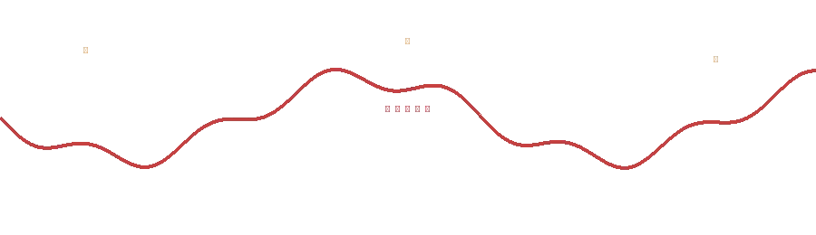
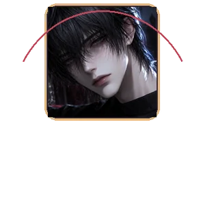
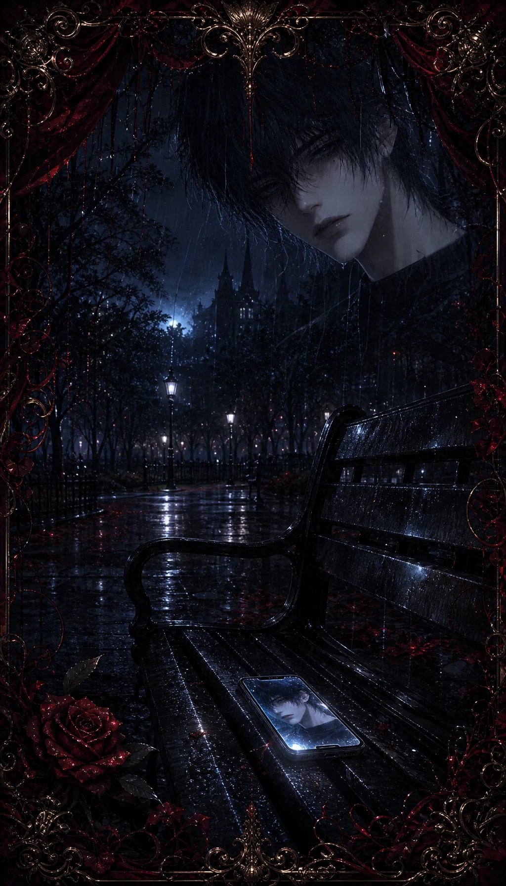
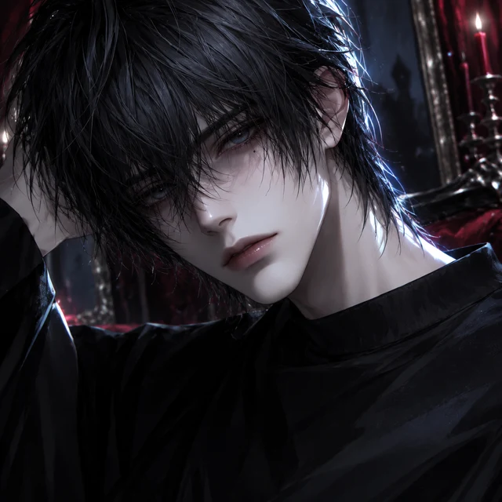

FOUND PHONE / 01

未读来电
一部遗失的手机 · 一段不该开始的关系
UNREAD CALL / FATAL ENTANGLEMENT
沈屿 · 22岁 · 最后上线：3分钟前
开始故事
继续游戏
图鉴
设置
心理恐怖 · 血腥意象 · 跳脸与闪烁可在设置中关闭
落白 & 她
14:23
DAY 01
87%
沈屿
在线
▦
▤
⚙
FINAL RECORD
回到标题
开始二周目
查看收集
落白 & 她
×
♠
PRIVATE GAME / 06
鬼牌
沈屿把五张牌推到你面前。
继续聊天
×